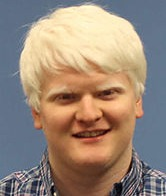
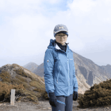
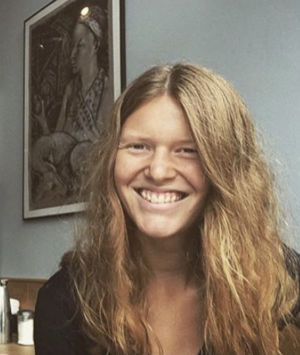
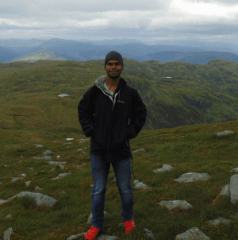
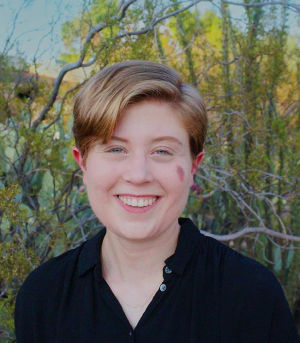

Joe Adamo
Graduate Student in Astronomy (Advisor: Tim Eifler)
I work on covariance estimation and power spectrum modeling for the data analysis of the SPHEREx mission.
Gabriela Cota
Graduate Student in Astronomy (Advisor: Elisabeth Krause)
My work focusses on SPHEREx data, in particular I am developing new concepts for large-scale structure clustering measurements.
Pier Fiedorowicz
Graduate Student in Physics (Advisor: Eduardo Rozo)
I am interested in theoretical cosmology and interpreting cosmological observations from the Dark Energy Survey. Currently I work on metrics to quantify whether different cosmological probes are in tension, or consistent with each other.

Yu-Hsiu Huang
Graduate Student in Astronomy (Advisor: Elisabeth Krause)
I am interested in observational cosmology and extragalactic astronomy. I am now working on understanding the environmental effects on Tully-Fisher relation with IllustrisTNG simulations.

Annie Moore
Graduate Student in Physics (Advisor: Elisabeth Krause)
I work on theoretical modeling for power spectra extracted from the SPHEREx mission.
Maria Mutz
Graduate Student in Physics (Advisor: Tim Eifler)
My work focusses on data analysis with weak lensing data from the Dark Energy Survey and from the Kilo Degree Survey.
Paul Rogozenski
Graduate Student in Physics (Advisor: Elisabeth Krause)
I am interested in theoretical cosmology and interpreting cosmological observations from the Dark Energy Survey. Currently I work on metrics to quantify whether different cosmological probes are in tension, or consistent with each other.

Pranjal Singh
Graduate Student in Astronomy (Advisor: Elisabeth Krause)
I'm interested in observational cosmology. Currently, I'm working on identifying Kinematic Lensing (KL) in galaxies using simulations and spectroscopic/imaging data from Keck, LBT and HST.

Maggie Smith
Graduate Student in Physics (Advisor: Elisabeth Krause)
I work on kinematic lensing using mock observations from Illustris TNG.
Jiachuan Xu
Graduate Student in Astronomy (Advisor: Tim Eifler)
I work on Kinematic Lensing (KL), a new idea to combine spectroscopic and imaging information that enables us to use the distortion of galaxy shapes by the gravitational potential of large-scale structure to constrain cosmology. I explore whether KL can be used with the instrumentation of the Roman Space Telescope mission.
Aaron Huhges
Major: Astronomy (Advisor: Tim Eifler )
I work on Machine Learning shape measurements methods using the galsim software.
Sai Krishanth Pulikesi Mannan
Major: Astronomy (Advisor: Tim Eifler)
I work on data analysis with the Dark Energy Survey and quantify the most important systematics contributions to the error budget.
Nick Sand
Major: Physics (Advisor: Eduardo Rozo )
I am developing code to do numerical calibrated jackknives with no randoms in numerical simulations to enable fast computation of clustering statistics, including error bars.
Adam Skora
Major: Physics (Advisor: Eduardo Rozo )
I use multi-wavelength data to characterize the selection function of photometrically selected and SZ-selected galaxy clusters.
Paxton Tamooka
Major: Physics (Advisor: Eduardo Rozo)
I am studying the velocity structure of satellite galaxies in massive galaxy clusters.
Made with Mobirise - Visit site